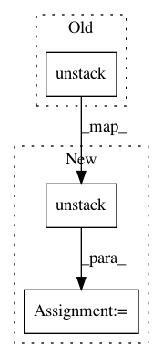

ac2a794577087259da7200eefc792dbba40f8600,niftynet/layer/resampler.py,ResamplerLayer,_resample_nearest,#ResamplerLayer#Any#Any#,60
Before Change
spatial_coords = tf.cast(spatial_coords, COORDINATES_TYPE)
output = tf.stack([
tf.gather_nd(img, coords) for (img, coords) in
zip(tf.unstack(inputs), tf.unstack(spatial_coords))])
if self.boundary == "ZERO" and not partial_shape:
scale = 1. / (tf.constant(in_spatial_size, dtype=tf.float32) - 1)
After Change
spatial_coords = tf.round(sample_coords)
spatial_coords = tf.cast(spatial_coords, COORDINATES_TYPE)
batch_inputs = tf.unstack(inputs)
batch_coords = tf.unstack(spatial_coords)
if len(batch_inputs) == len(batch_coords):
gathered_image = [tf.gather_nd(img, coord) for (img, coord) in
zip(batch_inputs, batch_coords)]
else:
gathered_image = []
for img in batch_inputs:
for coord in batch_coords:
gathered_image.append(tf.gather_nd(img, coord))
output = tf.stack(gathered_image)
if self.boundary == "ZERO" and not partial_shape:
scale = 1. / (tf.constant(in_spatial_size, dtype=tf.float32) - 1)
mask = tf.logical_and(
In pattern: SUPERPATTERN
Frequency: 4
Non-data size: 3
Instances
Project Name: NifTK/NiftyNet
Commit Name: ac2a794577087259da7200eefc792dbba40f8600
Time: 2017-11-02
Author: wenqi.li@ucl.ac.uk
File Name: niftynet/layer/resampler.py
Class Name: ResamplerLayer
Method Name: _resample_nearest
Project Name: NifTK/NiftyNet
Commit Name: ac2a794577087259da7200eefc792dbba40f8600
Time: 2017-11-02
Author: wenqi.li@ucl.ac.uk
File Name: niftynet/layer/resampler.py
Class Name: ResamplerLayer
Method Name: _resample_inv_dst_weighting
Project Name: NifTK/NiftyNet
Commit Name: f6b5e2412d4912caa43384d97b90287b2c4e218f
Time: 2017-08-18
Author: wenqi.li@ucl.ac.uk
File Name: niftynet/layer/loss.py
Class Name:
Method Name: wasserstein_disagreement_map
Project Name: tensorflow/models
Commit Name: de3a34b1a0213cc8d6d6dc0931b0f9924cdc5456
Time: 2020-08-18
Author: kaushikshiv@google.com
File Name: research/object_detection/core/target_assigner.py
Class Name: DETRTargetAssigner
Method Name: batch_assign